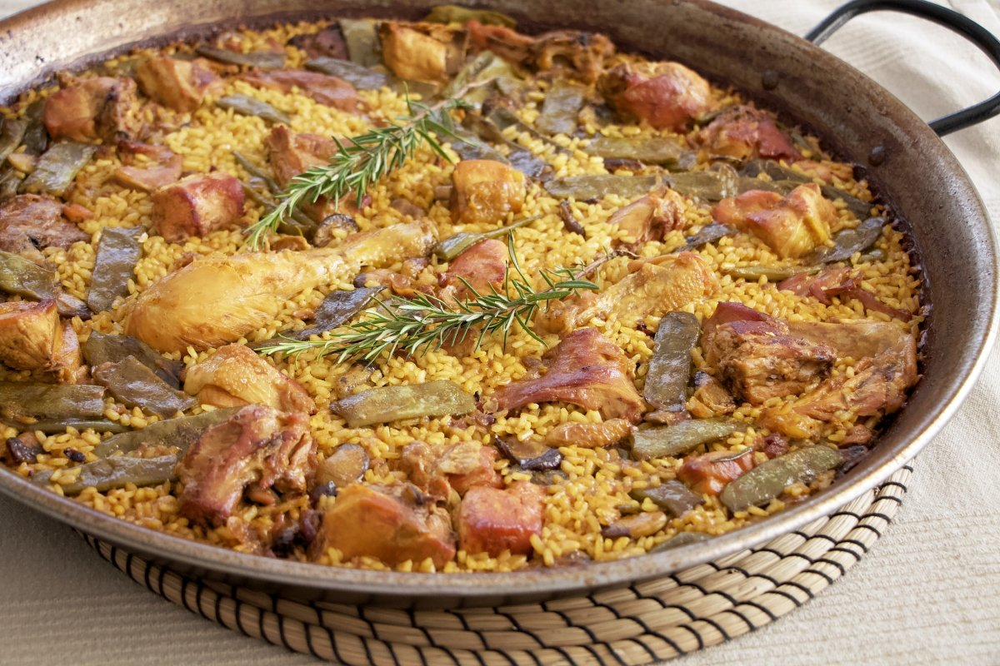
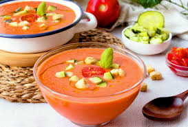
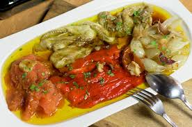
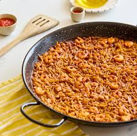

Categoría: platos destacados
Esta selección reúne algunos platos representativos de la gastronomía mediterránea. Cada uno de ellos refleja la importancia del producto local, las recetas tradicionales y la diversidad culinaria de distintas zonas de España.

Paella valenciana
Plato emblemático elaborado a base de arroz y asociado a la tradición culinaria valenciana. Es una de las recetas más conocidas de la cocina española.
Ver detalle de la paella valenciana
Gazpacho andaluz
Sopa fría muy popular durante los meses de calor, preparada con tomate, pepino, pimiento, aceite de oliva y otros ingredientes frescos.
Ver detalle del gazpacho andaluz
Escalivada
Preparación tradicional de verduras asadas muy vinculada a la cocina catalana y mediterránea, valorada por su sencillez y sabor.
Página de detalle no disponible todavía
Fideuà
Receta marinera elaborada con fideos y caldo de pescado, muy apreciada en zonas costeras del Mediterráneo.
Página de detalle no disponible todavía